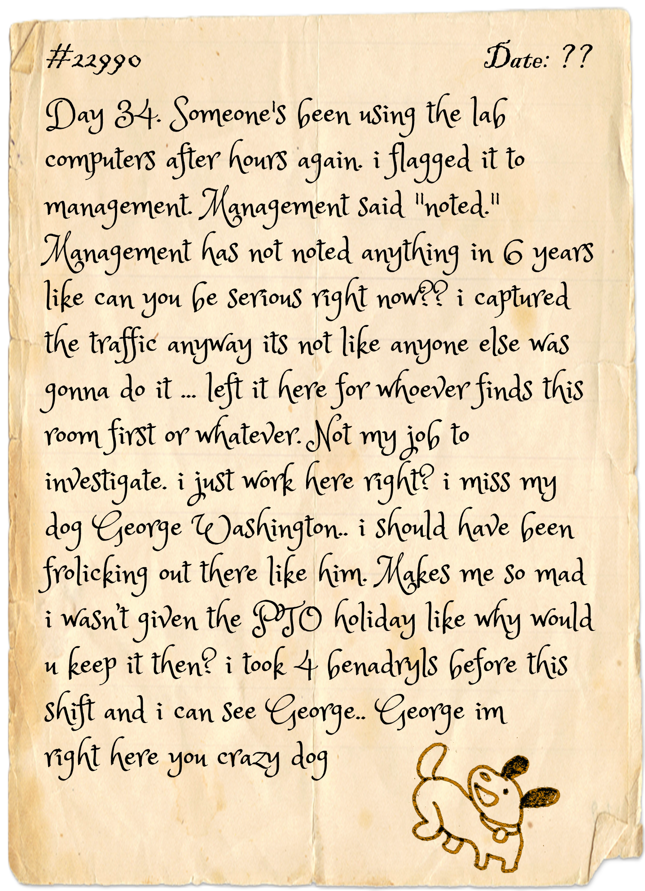

// CHALLENGE_01 //
THE PACKET TRANSMISSION
[NET]
📜 The Archivist's Note
Suspicious traffic was flagged during routine monitoring. Someone looked up a domain that shouldn't exist — then reached out to it. Follow the DNS trail. Find the HTTP request. Read what was sent.

Network Packet Analyzer
Filter: dns || http
DNS
HTTP
TCP
SUBMIT YOUR ANSWER:
forms.gle/wT1AwS8aMfRwzqWF8
01 //
Spot the Suspicious DNS Query
Click through the DNS packets. One domain looks very out of place among the rest — that's your target. Note it down.
02 //
Read the DNS Response
Find the DNS response for that domain. Open it and check the
Answers field — it gives you the IP address the domain resolved to.
03 //
Follow the HTTP Request
Now find the HTTP packet going to that same IP. The request path contains the letter.